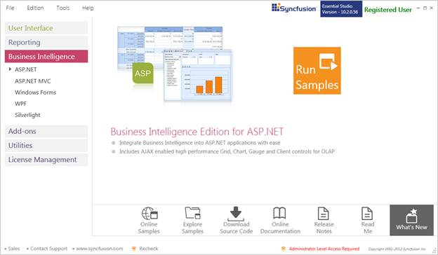
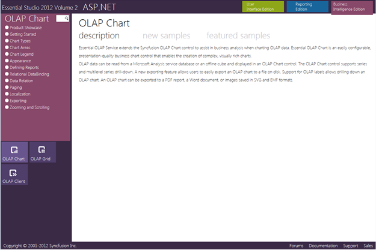
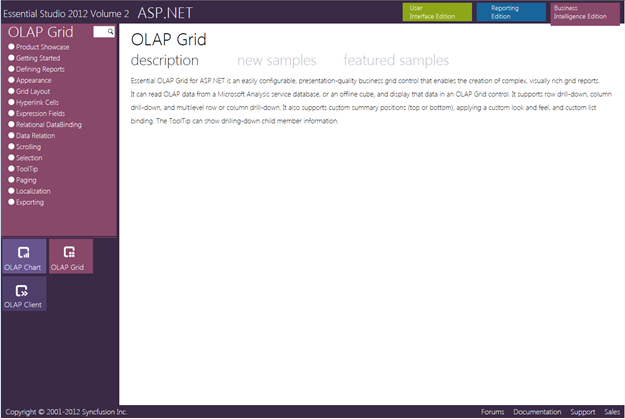

This section covers the location of the installed samples and describes the procedure to run the samples through the sample browser and online. It also provides the location of the source code.
Samples Installation Location
The Essential BI Grid samples are installed in the following location on the local disk drive:
Windows XP:
C:\Syncfusion\Essential Studio<version number>\BI\Web\OlapGrid.Web\Samples\
Windows 7/Vista:
C:\Users\<User Name>\AppData\Local\Syncfusion\EssentialStudio\Essential Studio<version number>\BI\Web\OlapGrid.Web\Samples
Viewing Samples
The steps to view samples are as follows:
1. Click Start > All Programs > Syncfusion > Essential Studio <version number> > Dashboard.

Figure 2: Syncfusion Essential Studio BI Edition Dashboard
2. On the Dashboard window, click Run Samples for ASP.NET under BI Edition. The BI Web Sample Browser window will be displayed.
 Note: You can view the samples in any of the
following three ways:
Note: You can view the samples in any of the
following three ways:
· Run Samples—Click to view the locally installed samples.
· Online Samples—Click to view online samples.
· Explore Samples—Explore BI Web samples on the disk.

Figure 3: OLAP Chart ASP.NET Sample Browser
3. Click OLAP Grid under Other Products. The OLAP grid samples will be displayed.

Figure 4: OLAP Grid Sample Browser
4. Select any sample and browse through the features.
Source Code Location
The default location of the OLAP grid source code is the following:
[System Drive]:\Program Files\Syncfusion\Essential Studio\[Version Number]\BI\OlapGrid.Web\Src